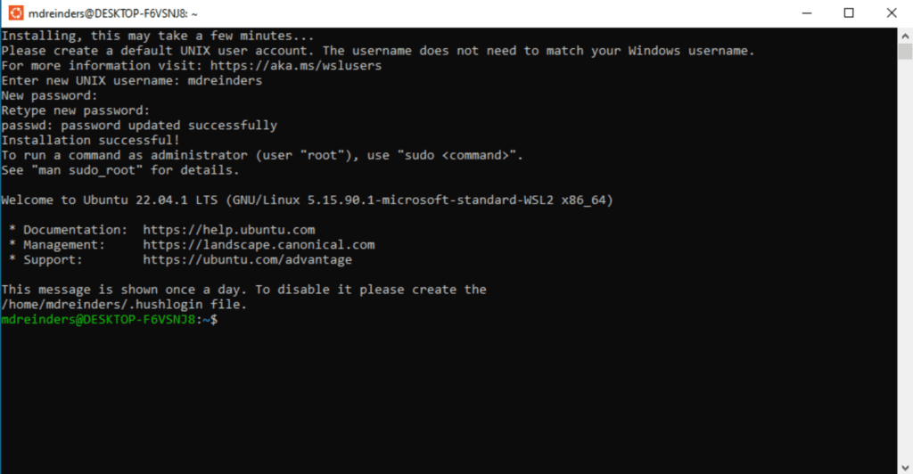
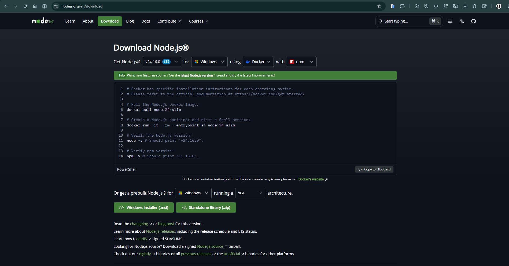

1.2 Install everything¶
This is the big setup lesson. By the end your computer, whether it runs Windows, macOS, or Linux, will be a real coding machine: a proper terminal, a code editor, Node.js, Git, and a GitHub account. Take your time and do the steps in order.
This is the longest lesson in the course
Plan for about an hour, and do not feel you must finish it in one sitting. After each step there is a checkpoint. Stop at any checkpoint, take a break, and come back later. The checkpoints tell you exactly where you are.
What you'll know by the end¶
- What an operating system is, and which one suits coding
- How to get a proper terminal on your system
- How to install Node.js, VS Code, and Git
- Why we use an IDE, and why VS Code first
- How to create a GitHub account and connect Git to it
A quick word on operating systems¶
An operating system (Roman Urdu: woh bunyadi software jo poora computer chalata hai), or OS, is the software that runs your whole computer. It sits between you and the machine. Your apps talk to the OS, and the OS talks to the hardware. Every program you open, from Chrome to a game, runs on top of it.
The big three¶
Almost every computer runs one of three operating systems. Each has a logo you already know.
- Windows, by Microsoft. The most common OS on laptops and in homes, schools, and offices.
- macOS, by Apple. Runs only on Apple computers (MacBook, iMac).
- Linux, free and open. It powers most servers on the internet, and many developers use it on their own machines too.
What changes when you switch OS¶
Moving to a different OS is like moving to a city with different rules. The big differences you feel are:
- The apps. Some programs are made for one OS only. A
.exeinstaller is for Windows; a.dmgis for macOS. - The file paths. Windows writes
C:\Users\Ali, while macOS and Linux write/home/ali. - The terminal. Windows uses PowerShell; macOS and Linux use a Unix shell. Most coding tutorials online assume the Unix shell.
- Installing software. Linux and macOS install most tools with one command in the terminal. Windows usually uses installers you download and click.
Which OS is best for coding?¶
The honest answer: all three work. But they are not equal for a beginner who wants to code. Here is how they compare.
| Windows | macOS | Linux | |
|---|---|---|---|
| Easy for a beginner | Very easy | Easy | Takes some learning |
| Ready for coding tools | Good, great with WSL2 | Very good | Excellent |
| Comes with the machine | Most laptops | Apple devices only | You install it free |
| Cost | Included with most laptops | Apple hardware, costly | Free for any computer |
| Security | Good, but a big target, so keep it updated | Very good | Very good |
| Who uses it | Most people and students | Many developers and designers | Servers and many developers |
What we do in this course
If you use Windows, you do not have to choose between Windows and Linux. You will run Linux inside Windows with a tool called WSL2. You keep all your normal Windows apps, and you also get the Linux terminal that coding tools love.
These are big downloads
The tools below are large, and on Windows WSL2 also downloads Ubuntu. Use good internet if you can, and plug in your charger, since some steps restart the computer.
Step 1: Get a working terminal¶
This first part is the one that differs by operating system, so pick your tab.
Windows 11 can run Linux inside it with WSL2, giving you the tools developers expect without leaving Windows.
- Click Start and type
PowerShell. - Right click Windows PowerShell, choose Run as administrator, and click Yes.
-
Type this command and press Enter:
-
Wait for it to finish. It downloads Ubuntu Linux, so this takes a few minutes.
- When it asks you to reboot, save your work and restart.
Windows 10 works the same way, with one extra step on older builds.
- Click Start, type
PowerShell, right click it and choose Run as administrator. - Run
wsl --install. On recent Windows 10 this is all you need. - If that command fails, turn on two features first: click Start, type
Windows Features, open Turn Windows features on or off, tick Virtual Machine Platform and Windows Subsystem for Linux, click OK, and reboot. Then runwsl --installagain.
macOS already ships with a Unix terminal, so there is no WSL to install.
- Press
Cmd + Space, typeTerminal, and press Enter to open it. - Install Homebrew, the macOS package manager, by following the one command on brew.sh. You will use it to install the other tools.
You are already on Linux, so you have a terminal and a package manager.
- Open your terminal, often with
Ctrl + Alt + T. - That is it. Where Windows users run Ubuntu inside WSL, you use your system directly.
Windows: if your laptop can't run WSL2
Some older laptops cannot run WSL2, and that is fine. You can do the whole
course the Windows native way instead. Skip the Ubuntu step below, and install
the normal Windows versions of Node.js, VS Code, and Git from the download
links in each step. When a lesson shows a bash command, run it in the Git
Bash terminal that comes with Git for Windows.
Step 2: Finish your Linux setup (Windows users)¶
macOS and Linux users
You already have your terminal, so you can skip this step and go to Step 3.
After the restart, Ubuntu opens on its own to finish setup. If it does not, click Start and click Ubuntu.
- Wait while Ubuntu installs. The first run takes a minute.
- When asked, type a new UNIX username. Use lowercase letters, like
ali. - When asked, type a password and press Enter, then type it again to confirm.
The password does not show on screen as you type. You will see nothing move, no dots, no stars. That is normal, and is how Linux hides it. Type carefully and press Enter.

اردو میں مزید وضاحت
جب آپ Ubuntu میں پاس ورڈ ٹائپ کرتے ہیں تو اسکرین پر کچھ نظر نہیں آتا، نہ حروف نہ نقطے۔ یہ خرابی نہیں ہے۔ لینکس میں پاس ورڈ اسی طرح چھپا رہتا ہے تاکہ کوئی دیکھ نہ سکے۔ آرام سے ٹائپ کریں اور Enter دبائیں۔
Remember this password. You will need it when you install things later.
How to close Ubuntu and open it again
You can close the Ubuntu window any time to exit. To start it again later, you
have two easy ways: click Start and type
Ubuntu, or open any terminal and type wsl. Both drop you straight back into
your Linux machine.
Checkpoint 1: your terminal is ready
Windows users have Ubuntu set up; macOS and Linux users have their terminal. A safe place to stop. Next you install your code editor.
Step 3: Install VS Code (your code editor)¶
What is an IDE, and why VS Code?¶
An IDE (Roman Urdu: aik hi app jisme code likhne ke saare auzaar hote hain), short for integrated development environment, is one app that brings together everything you need to write code: a text editor, a file explorer, a built-in terminal, search, and add-ons. A plain text editor only edits text. An IDE helps you write, run, and fix code all in one place.
Why VS Code? It is free, fast, runs on every OS, and is by far the most popular editor among developers, so help and add-ons are everywhere. There are others: WebStorm is powerful but paid, Sublime Text and Zed are very fast and light, and Cursor is VS Code with AI built in. You can try them later. We all use VS Code here so we are looking at the same screen.
A few VS Code shortcuts worth learning now
Learn them one at a time. They save you hours.
Ctrl + Ssave the fileCtrl + /comment or uncomment the current lineCtrl + `open or close the built-in terminalAlt + UpandAlt + Downmove the current line up or downCtrl + Pjump to any file by typing its nameCtrl + Shift + Popen the command palette, which runs any VS Code command
VS Code also has a time-saver called Emmet that turns short abbreviations into full HTML. You will meet it in the HTML chapter.
Install it¶
Download VS Code from code.visualstudio.com/download and pick your system, then follow your tab.
- Run the installer you downloaded and accept the defaults.
- Open VS Code, click the Extensions icon on the left bar (it looks like four small squares).
- Search for
WSLand install the WSL extension by Microsoft. - Open your Ubuntu terminal and type
code .to open VS Code connected to Linux. - Look at the bottom-left corner for a small green box. That green box means VS Code is running inside Ubuntu, which is what you want.
- Open the downloaded file and drag Visual Studio Code into your Applications folder.
- Open it from Applications, or with
Cmd + Spacethen typeCode.
- Install the
.debor.rpmyou downloaded, or runsudo snap install code --classic. - Open it from your apps menu, or type
code .in a terminal.
Checkpoint 2: your editor is ready
VS Code is installed (and on Windows it connects to Ubuntu with the green box). Next you install Node.js.
Step 4: Install Node.js¶
Node.js lets you run JavaScript outside the browser, and it comes with npm, the tool that installs code packages. You will use both constantly.
Open nodejs.org/en/download. This page builds the exact install commands for your system. Make sure npm is selected, it almost always is. If you see a Docker option and plan to use it, pick that too. The site is smart and usually detects the right choices for you. This is just in case.

Use nvm, which installs Node.js and lets you switch versions later without breaking anything. In your terminal:
-
Install nvm:
-
Close the terminal and open it again, so nvm loads.
-
Install the latest long-term-support version of Node:
-
Check that both work. You should see two version numbers:
- On the download page, choose the Windows Installer (.msi) for the LTS version.
- Run it and accept the defaults.
- Open a new terminal and check it worked:
node -vandnpm -vshould each print a version number.
Checkpoint 3: Node.js works
node -v and npm -v both print version numbers. npm comes with Node, so you
do not install it separately.
Step 5: Create your GitHub account first¶
GitHub is a website where you store your code online and share it. We make the account now, before Git, because Git needs to match it.
- Open github.com and click Sign up.
- Use an email you check often, for example your Gmail.
- Pick a username you are happy to show people. It becomes part of your web address.
- Confirm your email when GitHub sends you a message.
Remember these two things
Write down the email and the username you chose. In the next step you will give Git the exact same email and username, so your commits link to this GitHub account.
Step 6: Install and set up Git¶
Git tracks the history of your code. Install it, then connect it to the GitHub account you just made.
Install Git from your terminal:
Type your Ubuntu password if it asks, then press y to confirm.
Download Git for Windows from git-scm.com/install/windows and run the installer. It also gives you the Git Bash terminal.
Run brew install git, or just type git --version and macOS will offer to install the developer tools that include Git.
Now tell Git who you are. Use the same username and email as your GitHub account:
# use the same username you chose on GitHub
git config --global user.name "your-github-username"
# use the same email you signed up to GitHub with
git config --global user.email "you@example.com"
Checkpoint 4: you are fully set up
Git is installed and linked to your GitHub account, with the matching username and email. Your computer is now a real coding machine.
Knowledge check¶
Don't write anything down. Just see if you can answer these in your head. If you can't, scroll back up. That's exactly what this section is for.
- In one sentence, what does an operating system do?
- On Windows, what does WSL2 give you that plain Windows does not?
- Why does the password show nothing while you type it in Ubuntu?
- Why do we create the GitHub account before setting up Git?
- Which two commands check that Node.js and npm work?
What's next¶
Your computer is now a real coding machine. You have a terminal, VS Code, Node.js, Git, and a GitHub account. Next you will learn the terminal properly, the text window where you typed those commands. It is faster than the mouse once you know it.
Next lesson: 1.3 The terminal →
Going deeper (optional)¶
These are for the curious. You don't need them to continue.
- Microsoft: Install WSL the full official guide.
- VS Code: Developing in WSL how the WSL extension works.
- nvm: nvm on GitHub the official project page.